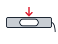
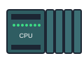
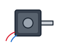
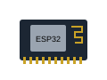

1Who talks to whom

Sensorsbuttons, load cells, encoder, camera answer

S7-1200 PLCruns the steps, one after another

Muscles6 motors, 3 heaters, 12 valves
PLCnetwork cable (PROFINET)
Touch screenon the cabinet door

ESP32RS-485 wire (Modbus RTU)
Wi-Finew data every second
Website and appwatch and control